Explore Macau
A Brief History
Macau developed as a Portuguese trading post from 1557, blending Iberian fortifications with Chinese merchant quarters. Baroque churches, civic squares, and temple guild halls illustrate how South China Sea commerce shaped a unique Lusophone-Asian urban landscape before the handover to Chinese administration. Ruins of St Paul's façade and casino foreshores frame Lusophone-Asian heritage on the Pearl River Delta.
Attractions Map
Top Sights & Activities
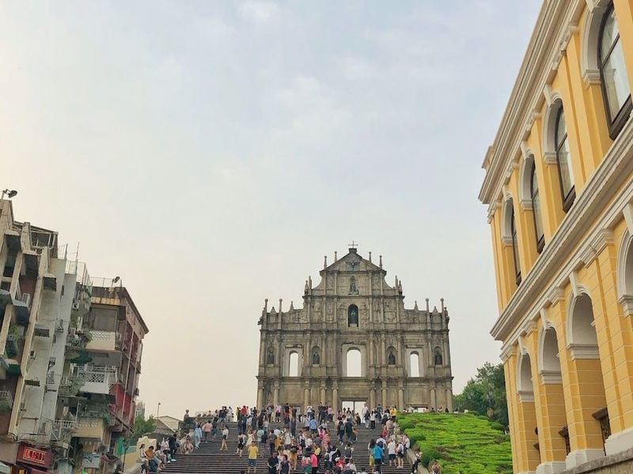
Ruins of Saint Paul's
The Ruins of Saint Paul's is a captivating historical site in Macau, renowned for its facade that remains from a 17th-century church. Originally part of a larger religious complex, this UNESCO World Heritage Site showcases the intricate artistry of its southern stone facade, which beautifully blends European Renaissance and Asian architectural styles. Once home to St. Paul's College and the Church dedicated to Saint Paul the Apostle, it was tragically destroyed by fire in 1835.
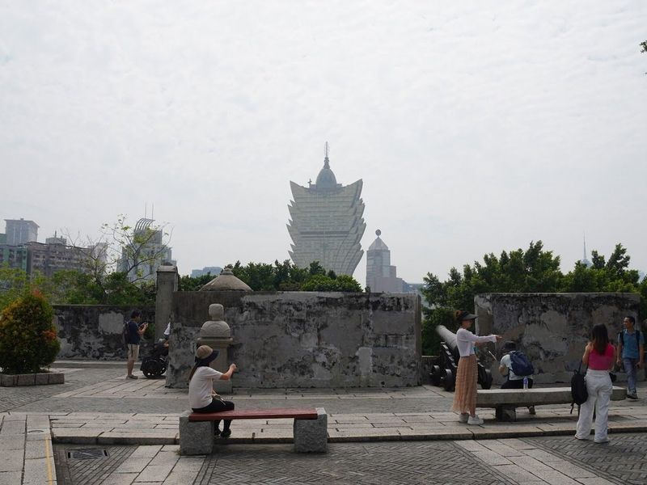
Monte Fort
Monte Fort, built in 1626, is a large fort with a rooftop park offering skyline views and featuring historic cannons. Climbing Mount Fortress hill to the right of the facade provides an opportunity to see remaining canons and defensive structures. Don't miss Na Tcha Temple behind the ruins for a different perspective on the site. Nearby, there's a section of old city walls made from clay, soil, sand, rice straw, crushed rocks, and oyster shells.
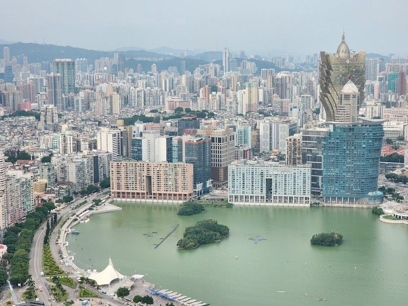
Macau Tower Convention and Entertainment Center
The Macau Tower Convention and Entertainment Center is a bustling hub featuring shops, a cinema, and various dining options, including a revolving restaurant with views. While the Outer Harbour used to offer picturesque vistas of boats on the Pearl River, it has undergone significant development with highways, skyscrapers, and attractions like the Macau Tower.
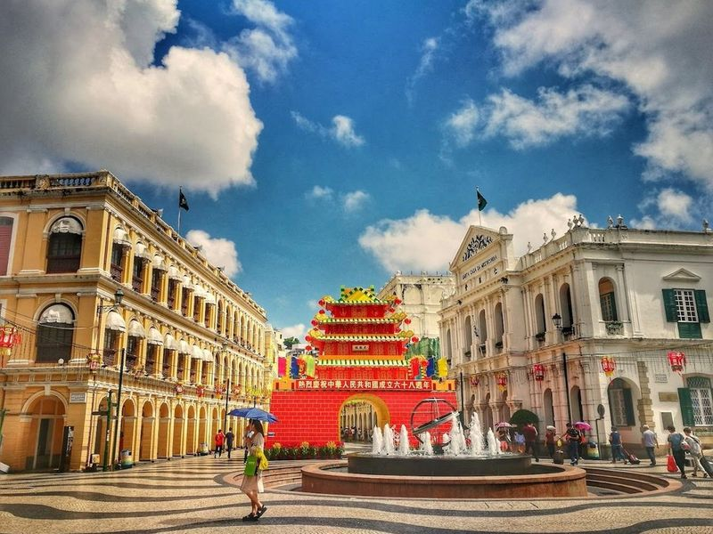
Senado Square
Senado Square is a bustling town square in Macau, surrounded by shops and restaurants. It serves as a venue for public events and is a popular starting point for exploring the city's tourist attractions. The area features Portuguese-style buildings, churches, and cathedrals such as Saint Dominic's Church and the Igreja da Se Cathedral. Nearby, visitors can find the famous Ruins of St. Paul's.
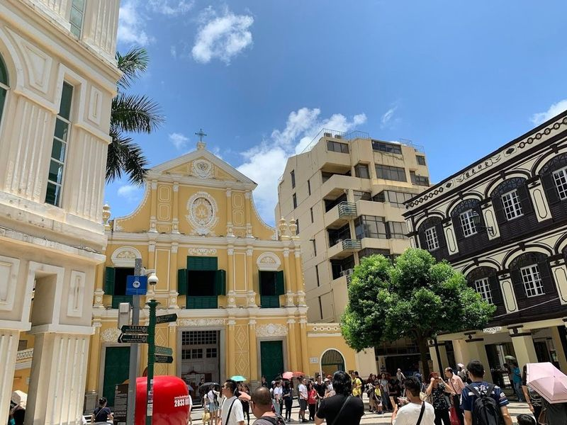
St. Dominic's Church
St. Dominic's Church, a historic baroque Catholic church dating back to the late 16th century, is a place of spiritual significance and artistic beauty. Dedicated to Lady of the Rosary, it features three elegantly crafted halls adorned with colorful stained glass windows, oil paintings, and statues of Christ. The church also houses a sacred-art museum displaying Mass utensils and wood-carved artifacts.
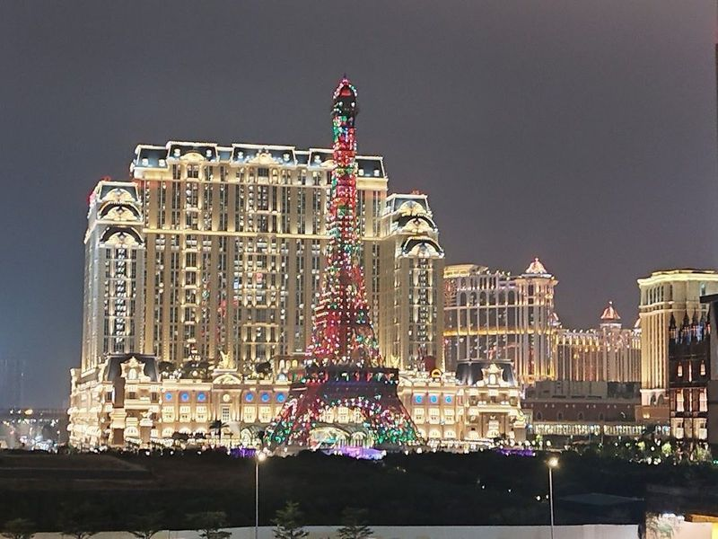
Eiffel Tower
The Parisian Macao Eiffel Tower is a half-scale replica of the Paris landmark, featuring two observation platforms that offer views of the city. Situated on the Cotai Strip, this impressive structure boasts 6,600 lights and 26km of cabling, creating a spectacle in the night skyline. The hotel and casino complex adjacent to The Venetian exudes French elegance with its marble corridors, crystal chandeliers, and gold-framed mirrors.
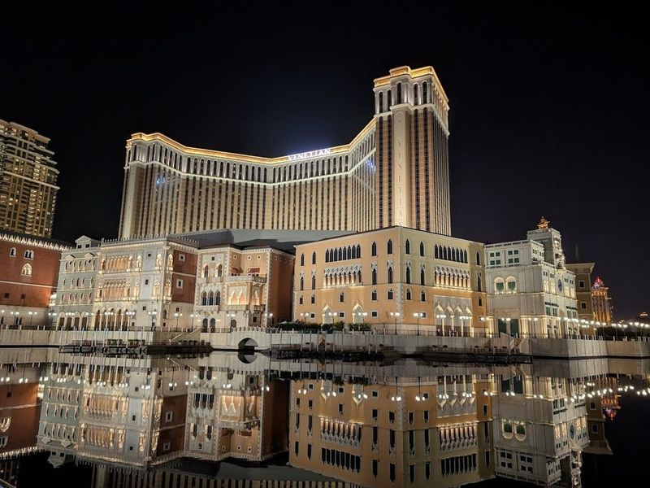
Venetian Macao Casino
If you're seeking a lavish and upscale casino experience, look no further than the Venetian Macao Casino. Situated on the Cotai Strip, it holds the title of being the largest casino and luxury hotel resort globally, spanning an impressive 10,500,000 square feet. This opulent palace of gambling offers a variety of games such as poker, blackjack, and slots for those looking to indulge in an evening of luxury entertainment.
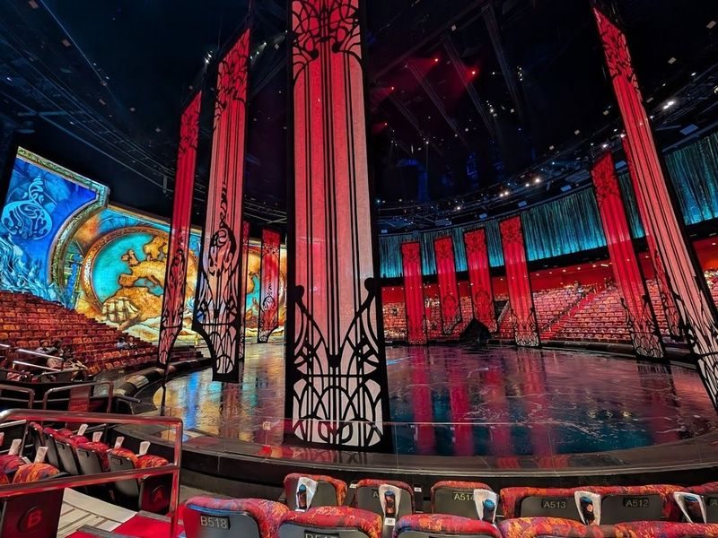
House of Dancing Water
Located in Macau, The House of Dancing Water is a show that has been described as ever seen. It takes place at the lavish Louis XIII hotel and casino, offering an experience for visitors. The show features a mesmerizing combination of water-based acrobatics, dance, and theater performances that are truly unique. With its visuals and captivating storyline, The House of Dancing Water promises to leave a lasting impression on all who attend.
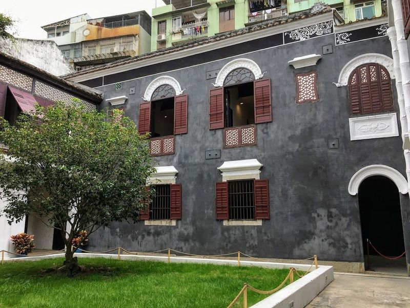
Mandarin's House
Mandarin's House, located in Macau's historic settlement, is a well-preserved Guangdong-style home that offers guided tours. This culturally significant venue provides insight into the origins of Macau and showcases the lifestyle of its early inhabitants while connecting it to the modern state. The interior has been meticulously preserved with original furniture and decorations, allowing visitors to step back in time and contemplate Macau's uniqueness.
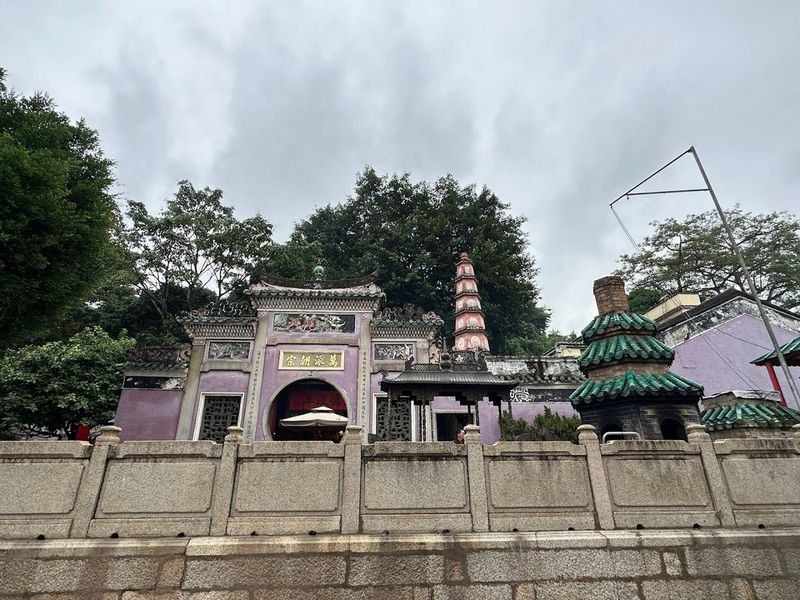
A-Ma Temple
A-Ma Temple, Macau's oldest temple built in 1488, is a significant symbol of the city's rich history and tradition. Dedicated to the sea goddess Matsu, it holds a history of over 500 years and is believed to have influenced the name 'Macau.' As the oldest Taoist temple in Macau, A-Ma Temple is revered for blessing seafarers and fishermen.
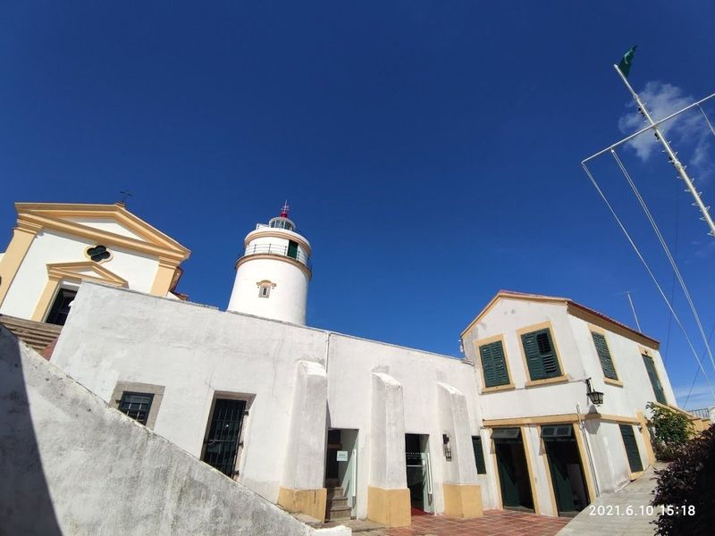
Guia Fortress and Lighthouse
Guia Fortress and Lighthouse, a UNESCO World Heritage site in Macau, is a colonial lighthouse with a 15-meter stone structure and a small museum. It sits atop Guia Hill, offering panoramic views of the city and can be reached by cable car from the Flora Gardens below. The fortress houses the Chapel of Lady of Guia, built in 1622 by Clarist nuns and adorned with murals depicting both Western and Chinese themes.
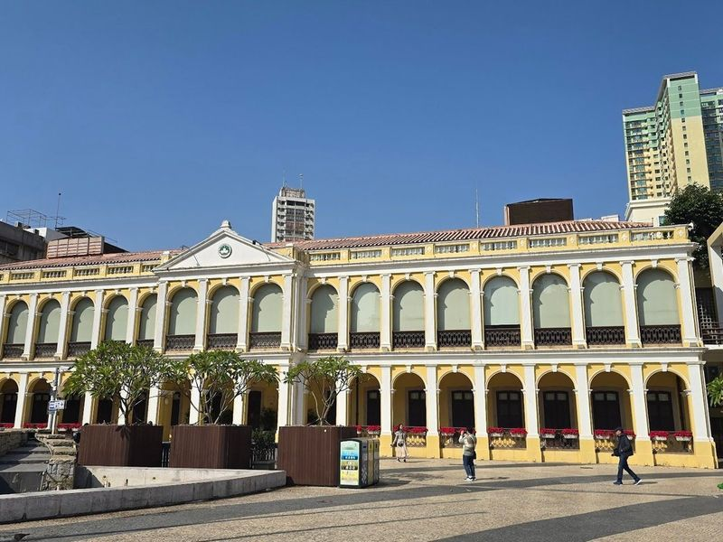
Tap Seac Square
Tap Seac Square, also known as Praca do Tap Seac, is a charming square surrounded by 1920s houses with European-style facades and Moorish influences. The cobblestone pattern of the square forms an impressive circular design appreciated from above. This place hosts various events throughout the year, making it a lively spot to experience local culture, especially during Chinese New Year when colorful parade floats are on display.
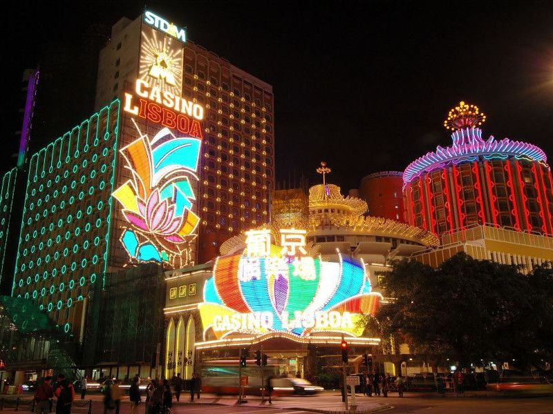
Casino Lisboa
Casino Lisboa is a renowned landmark in central Macau, known for its distinctive pineapple-shaped design and exterior lights. The complex includes the original Hotel Lisboa and Casino, which has a rich history dating back to 1970 and has undergone several renovations over the years. Additionally, the Grand Lisboa is an impressive 47-story tower resort that features the Grand Lisboa Casino, one of Macau's prime attractions.